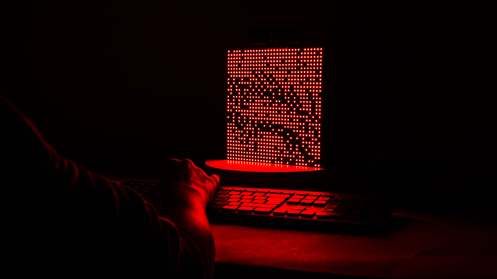
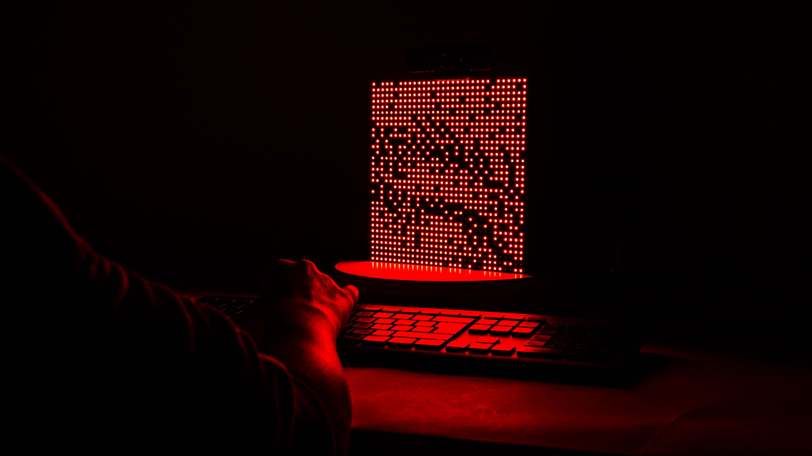

Dithering Experiments
Dithering Experiments is an
interactive art installation that mirrors its viewer using a 32×32 LED matrix and a live webcam feed.
By switching modes through the keyboard and a mouse, the viewer explores the world of
real-time image manipulation, computer vision, and pixel-based abstraction.
Brief
This project was created for the course
Programming Interactive Objects along with a classmate.
With no fixed brief, the challenge was to explore creative possibilities using a
32×32 LED matrix.
Outcome
A playful, pixelated mirror that invites people to
see differently, and play with pixels.
It’s a low-res canvas for exploring
dithering, edge detection, and pixelation in motion.
Iterations
At first, we tried showing the full webcam feed on the LED matrix, but everything turned into a soft blur. So we zoomed in, focusing on just a 32×32 crop of the webam feed. This shift gave each pixel more meaning and made the output feel more interesting.
We also explored using a distance sensor to interactively change the dithering threshold. It was a playful idea, but in practice, the readings were too unstable for a smooth experience, so we let it go.
Testing the distance sensor logic
Dithering styles
We started with Floyd–Steinberg dithering — diffusing pixel error to simulate gradients.
Then we moved on to Bayer (ordered) dithering. Using 2×2, 4×4, and 8×8 grids, we played with structure and rhythm.

Bayer dithering in action
Edge detection & pixelation
Toward the end, we introduced edge detection to highlight form and contrast. We also revisited pixelation as a medium in itself. It was about letting the image break apart, and seeing how recognizeable it is.
Edge detection in action
Enter the Matrix
A LED-based exploration of light, code, and reality
Learnings
- Less can be more: limiting resolution pushed us to get creative with the output
- When working with light and a webcam, always test in the dark (webcams and dark rooms don’t mix)
- Playing with code and image is a great way to learn
- Interactive art doesn’t need to be complex. The most interesting moments came from simple, curious interactions, not from overengineering
Like what you see? Just want to connect?
Let’s get in touch :)
Copied!